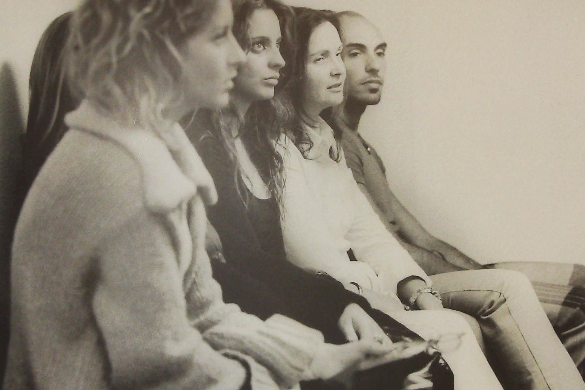

ALTA FORMAZIONE E COMPETENZE · FONDAZIONE COINSIEME ETS
Nuove competenze per il welfare dell'abitare e dell'autonomia.
La Fondazione COINSIEME ETS studia e sviluppa proposte di alta formazione specialistica, in dialogo con Atenei universitari ed enti del Terzo Settore, per contribuire alla formazione dei professionisti dell'abitare accessibile e della vita autonoma.
Stato dei percorsi formativi
Proposte in fase di studio con Atenei universitari
Iscrizioni non ancora attive al pubblico
Confronto aperto con Enti e Università
IL CONTESTO E LA VISIONE
Il ponte necessario tra cura, tecnologia e progetto di vita.
L'invecchiamento della popolazione, l'aumento della domanda di assistenza domiciliare e la disponibilità di tecnologie domotiche avanzate stanno ridisegnando il modo in cui pensiamo alla non autosufficienza e alla disabilità. Tuttavia, la tecnologia da sola non basta: serve una nuova cultura professionale capace di integrarla nei percorsi di vita delle persone.

Partecipanti durante un incontro di formazione e confronto.Foto Mario ed Eva Mulas — Archivio Capodarco / CO.IN.
01 · Integrazione dei linguaggi
Superare la frammentazione dei servizi
Spesso la persona e la famiglia si trovano a dover dialogare separatamente con il mondo sanitario, quello sociale e i fornitori tecnologici. Da qui nasce l'esigenza di sviluppare competenze capaci di mettere in relazione questi diversi linguaggi.
02 · Autonomia su misura
Dalla tecnologia all'autonomia su misura
Dispositivi smart, sensori e assistenti vocali hanno valore reale solo se scelti e configurati sui desideri, le abitudini e le reali capacità dell'individuo, rispettandone la dignità e la privacy.
03 · Competenze per il welfare
Qualificare il lavoro di cura nel Terzo Settore
Offrire a operatori, educatori, assistenti sociali e progettisti opportunità di specializzazione post-laurea e aggiornamento continuo per rispondere alle sfide del welfare contemporaneo.
Nota: Accanto ai percorsi specialistici per operatori, la Fondazione promuove anche iniziative di accompagnamento pratico e autoaiuto ai cittadini, come l'esperienza “Superare le Barriere Digitali!”, volte all'alfabetizzazione digitale quotidiana ma distinte dai percorsi formativi professionalizzanti.
PROPOSTA FORMATIVA PRIORITARIA · IN CORSO DI STUDIO CON ATENEI
Manager di Domotica Assistiva: una figura professionale innovativa.
Proposta in progettazione accademica
Il Manager di Domotica Assistiva è una figura professionale emergente concepita per operare come anello di congiunzione tra la persona con disabilità o anziana, la sua famiglia, la rete dei servizi socio-sanitari e i tecnici installatori. Non è un semplice tecnico di impianti, ma un consulente e progettista dei contesti di vita, capace di valutare il bisogno assistivo, co-progettare l'adattamento dell'ambiente domestico e accompagnare all'uso consapevole della tecnologia.
Aree di competenza oggetto della progettazione formativa
Area Sociale e Relazionale
Ascolto attivo, analisi del bisogno, supporto alla famiglia e al caregiver, etica della cura e tutela della privacy.
Area Tecnologica e Domotica
Conoscenza di sensori, ausili per l'autonomia, controllo ambientale, comandi vocali e piattaforme di teleassistenza.
Area Normativa e Gestionale
Quadro legislativo sull'accessibilità, agevolazioni fiscali, project management nel Terzo Settore e coordinamento della rete dei servizi.
Destinatari ideali del percorso formativo:
Laureati in discipline socio-sanitarie, psicologiche, educative o ingegneristiche/architettoniche;
Operatori ed educatori del Terzo Settore e dei servizi sociali e sociosanitari;
Professionisti della progettazione accessibile e dell'adattamento ambientale.
Stato del percorso: Proposta formativa di livello specialistico/post-laurea attualmente in fase di studio e confronto accademico con Atenei universitari. Le iscrizioni non sono aperte e non sono ancora definiti calendari, quote o crediti formativi.
Ulteriore linea di studio progettuale
Agriturismo Digitale, accessibilità e territorio.
Una proposta progettuale complementare in fase di studio, finalizzata a formare competenze capaci di unire turismo rurale, accoglienza accessibile, promozione delle filiere agroalimentari locali e digitalizzazione dei servizi di ospitalità.
Favorire l'accessibilità fisica e sensoriale nelle strutture ricettive rurali ed agrituristiche;
Utilizzare gli strumenti digitali per promuovere esperienze inclusive e fruibili da tutte le persone;
Valorizzare l'agricoltura sociale e l'integrazione con le comunità locali.
Stato del progetto: Proposta in fase di studio e valutazione preliminare. Corso non ancora avviato.
RADICI ED ESPERIENZA MATURATA
Formare per lavorare: una storia di competenze e inclusione.
L'impegno formativo della Fondazione COINSIEME ETS affonda le radici nell'esperienza quarantennale della cooperazione sociale e della rete CO.IN. Sin dagli anni Ottanta, la formazione non è mai stata considerata un'attività teorica a sé stante, ma la chiave primaria per l'emancipazione, la conquista dell'autonomia e l'inserimento lavorativo stabile di persone con disabilità.
Operatori al banco di montaggio di schede elettroniche in un laboratorio professionale (da servizio RAI).Archivio Capodarco / CO.IN. — riprese RAI
Formazione sul campo
Percorsi basati su casi reali, laboratori pratici e apprendimento cooperativo.
Interdisciplinarità
Integrazione costante tra competenze sociali, sanitarie, gestionali e tecnologiche.
Valorizzazione della persona
Costruire percorsi che abilitino capacità e talenti individuali, contrastando l'assistenzialismo passivo.
PARTENARIATI E RETI ISTITUZIONALI
Co-progettare la formazione del futuro.
Sei un Ateneo universitario interessato ad attivare percorsi congiunti di alta formazione? Un ente del Terzo Settore, un operatore o una persona interessata a contribuire alla definizione dei profili professionali o a ricevere aggiornamenti sulle future edizioni formative? Contatta la segreteria della Fondazione per avviare un dialogo o manifestare il tuo interesse.